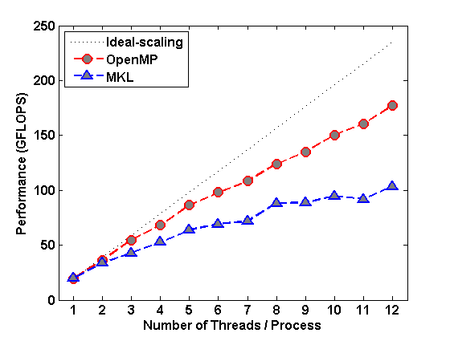
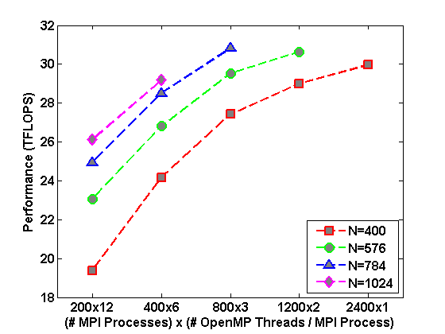
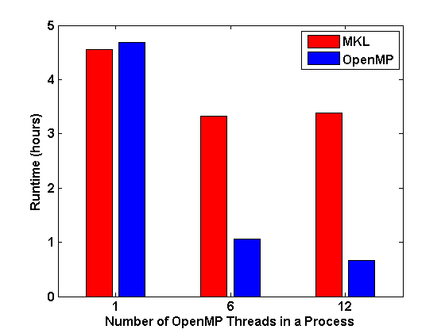

Consider a normalized block p-cyclic matrix
\begin{equation} \label{eq:M} M = \begin{bmatrix} I & & & B_1 \\ -B_2 & I & & \\ & \ddots & \ddots & \\ & & -B_L & I \\ \end{bmatrix}, \end{equation}
FSI computes a selected inversion of \(G = M^{-1}\).
The selected inversion is a collection of selected blocks of \(G\). For example, given two integers \(c\) (\(L\%c = 0\)) and \(q\in[0,c-1]\), FSI computes \(L/c\) selected block columns
\begin{equation}\label{eq:S} \mathcal{S} = \{G_{k\ell}\, |\, 1 \leq k \leq L \,\, \mbox{and} \,\, \ell \in \mathcal{I}\} \end{equation}
where \(\mathcal{I} = \{ c-q,\, 2c-q,\, \ldots,\, (L/c)c-q\}\).
(The selected inversion is not limited to block columns. For more patterns please see the Reference [1].)
FSI algorithm consists of three steps:
Clustering: block cyclic reduction (BCR);
Inversion: block structured orthogonal factorization and inversion (BSOFI);
Wrapping: seeds + adjacency relations \(\rightarrow\) selected inversion.
FSI.zip: a Fortran 90 standalone MPI/OpenMP hybrid parallel implementation of FSI algorithm.
Parallel application on computing Green's functions in many-body Quantum Monte Carlo Simulations. Details in Ref.[1, 2, 3].
|  |  |  |
A fast selected inversion algorithm for Green's function calculation in many-body quantum Monte Carlo simulations. Chengming Jiang, Zhaojun Bai and Richard Scalettar. In Proceedings of the 30th IEEE International Parallel and Distributed Processing Symposium (IPDPS 2016), pp. 473–482, 2016. (preprint)